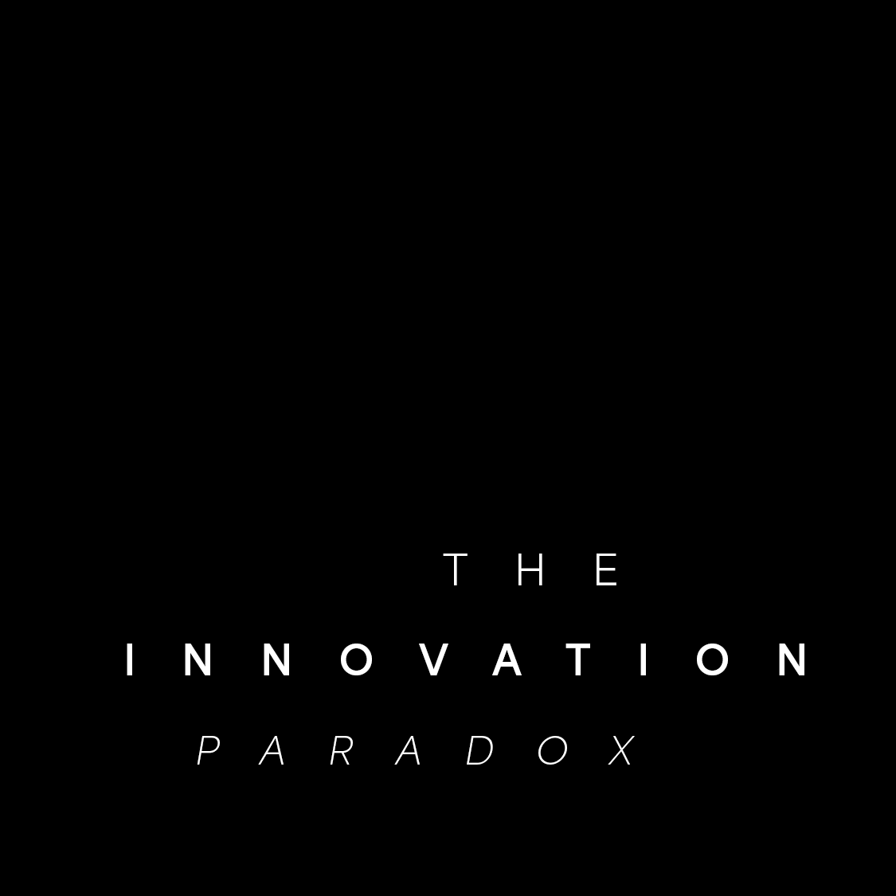
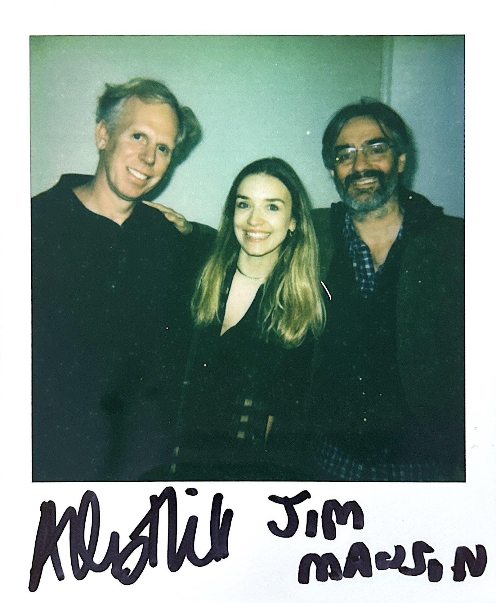

The Innovation Paradox
Podcast · GCV

A conversation series about how organisations keep up with new technology without losing the culture and values that hold them together.
Host James Mawson, an author and founder of several companies, talks to leaders about building organisations that last and what AI is changing for them.
Listen on Spotify
Credits
- HostJames Mawson
- Producer and EditorJade Matthew
- RecordistJulian Wharton, London Podcast Studios
- PublishedNovember 2025, GCV